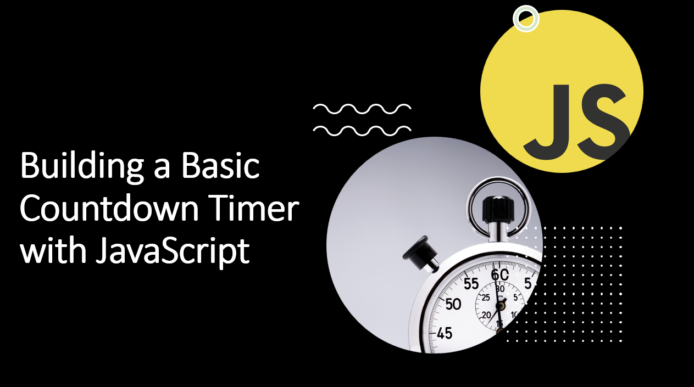

Introduction​
Countdown timers are useful for creating suspense or indicating time-sensitive events on your website.
In this blog post, we'll guide you through the process of building a basic countdown timer using JavaScript.
You'll learn how to calculate time differences, update the timer display, and trigger actions when the timer reaches zero.
Suggested Tutorials 📑:​
Let's get started!
1. HTML Structure​
Start by setting up the HTML structure for your countdown timer.
<!DOCTYPE html>
<html>
<head>
<title>Countdown Timer</title>
<link rel="stylesheet" href="styles.css">
</head>
<body>
<div class="timer">
<div class="time" id="days">00</div>
<div class="time" id="hours">00</div>
<div class="time" id="minutes">00</div>
<div class="time" id="seconds">00</div>
</div>
<script src="script.js"></script>
</body>
</html>
In the code above:
- We use the
div element to create a container for the countdown timer. - The
div elements with the time class represent the timer elements (days, hours, minutes, and seconds). - We use the
id attribute to uniquely identify each timer element. - The
script element is used to link the JavaScript file to the HTML document. - The
link element is used to link the CSS file to the HTML document.
2. CSS Styling​
Create a styles.css file to style the countdown timer.
.timer {
display: flex;
justify-content: center;
align-items: center;
font-size: 24px;
font-weight: bold;
height: 100vh;
}
.time {
padding: 0 10px;
}
In the code above:
- We use the
display: flex property to align the timer elements horizontally. - The
justify-content: center property centers the timer elements horizontally. - The
align-items: center property centers the timer elements vertically. - The
font-size and font-weight properties set the font size and weight of the timer elements. - The
height: 100vh property sets the height of the timer container to 100% of the viewport height.
Suggested Tutorials 📑:​
3. JavaScript Countdown Logic​
In your script.js file, implement the countdown timer logic.
const daysElement = document.getElementById('days');
const hoursElement = document.getElementById('hours');
const minutesElement = document.getElementById('minutes');
const secondsElement = document.getElementById('seconds');
const countdownDate = new Date('2023-12-31T23:59:59').getTime();
function updateTimer() {
const now = new Date().getTime();
const timeRemaining = countdownDate - now;
const days = Math.floor(timeRemaining / (1000 * 60 * 60 * 24));
const hours = Math.floor((timeRemaining % (1000 * 60 * 60 * 24)) / (1000 * 60 * 60));
const minutes = Math.floor((timeRemaining % (1000 * 60 * 60)) / (1000 * 60));
const seconds = Math.floor((timeRemaining % (1000 * 60)) / 1000);
daysElement.textContent = String(days).padStart(2, '0');
hoursElement.textContent = String(hours).padStart(2, '0');
minutesElement.textContent = String(minutes).padStart(2, '0');
secondsElement.textContent = String(seconds).padStart(2, '0');
if (timeRemaining < 0) {
clearInterval(timerInterval);
document.body.innerHTML = '<h1>Countdown Expired!</h1>';
}
}
updateTimer();
const timerInterval = setInterval(updateTimer, 1000);
In the code above:
- We use the
Date constructor to create a new date object representing the countdown date. The getTime() method returns the number of milliseconds since the Unix Epoch (January 1st, 1970 at midnight). - The
updateTimer() function calculates the time remaining until the countdown date and updates the timer display. - The
setInterval() method calls the updateTimer() function every second. - When the countdown timer reaches zero, we clear the interval and perform an action (in this case, we replace the HTML content of the page with a message).
Suggested Tutorials 📑:​
Conclusion​
Congratulations! 🥳 You've successfully built a basic countdown timer using JavaScript. This project demonstrates how to calculate time differences, update the display in real-time, and trigger actions when the timer reaches zero. Countdown timers are versatile elements that can be customized and integrated into various web applications. As you continue your JavaScript journey, consider adding additional features like user input for setting the target date or customizing the visual design of the timer. Keep experimenting and building to enhance your web development skills further!
Happy coding! 🎉